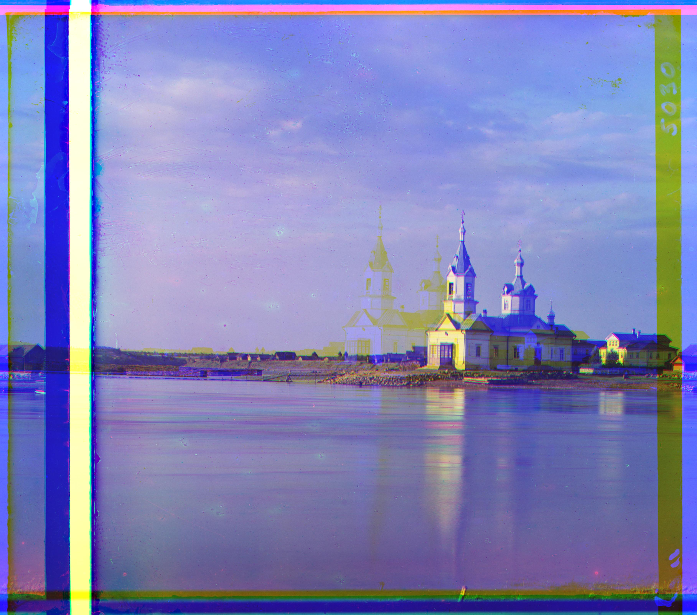
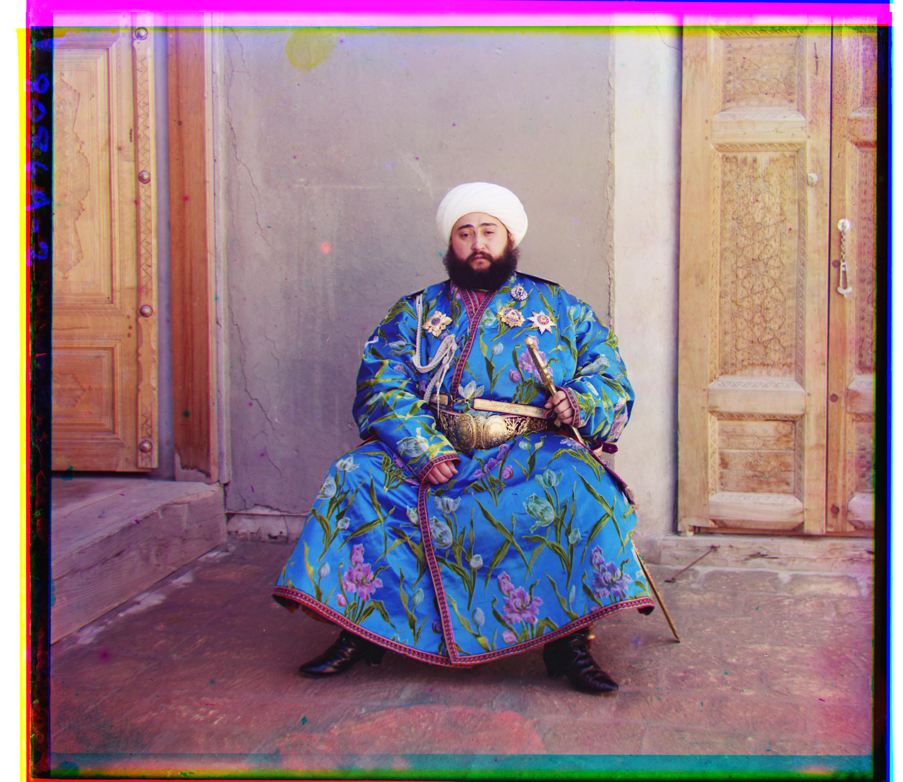
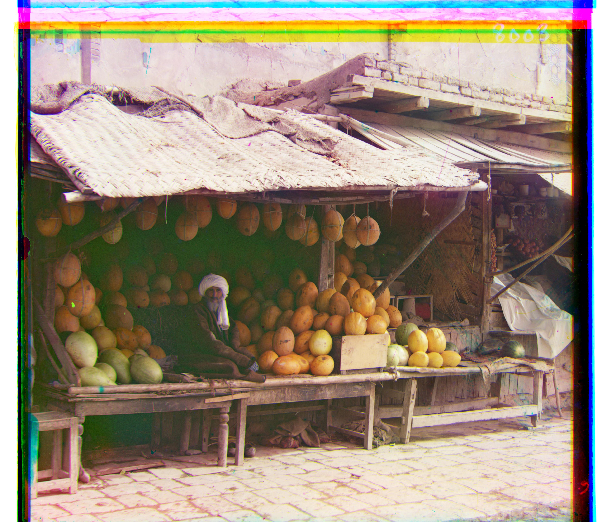
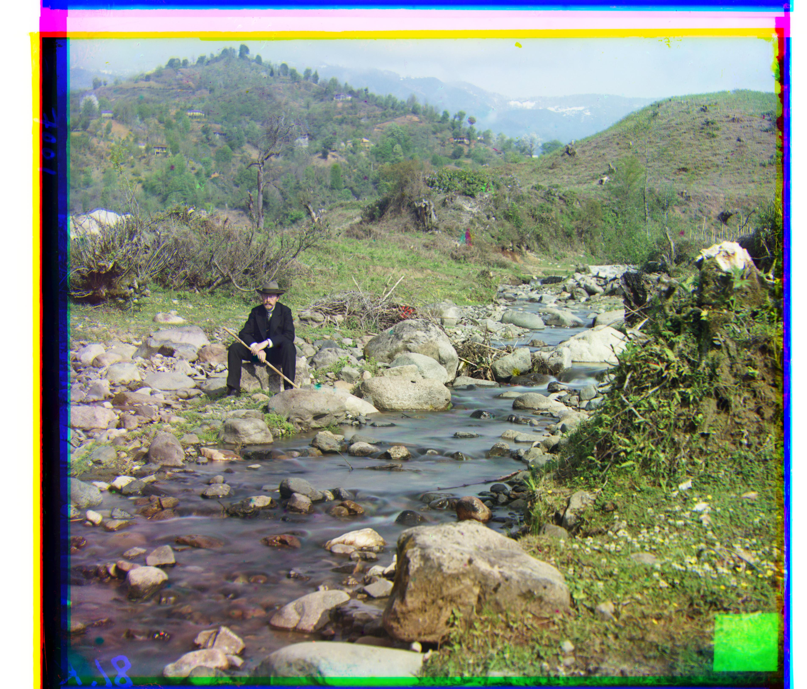
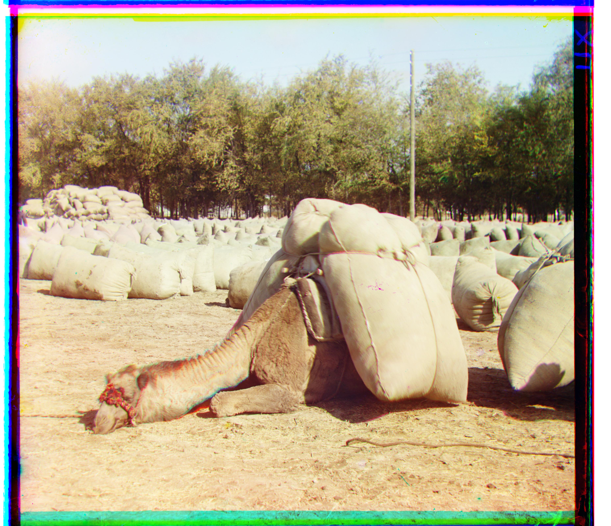
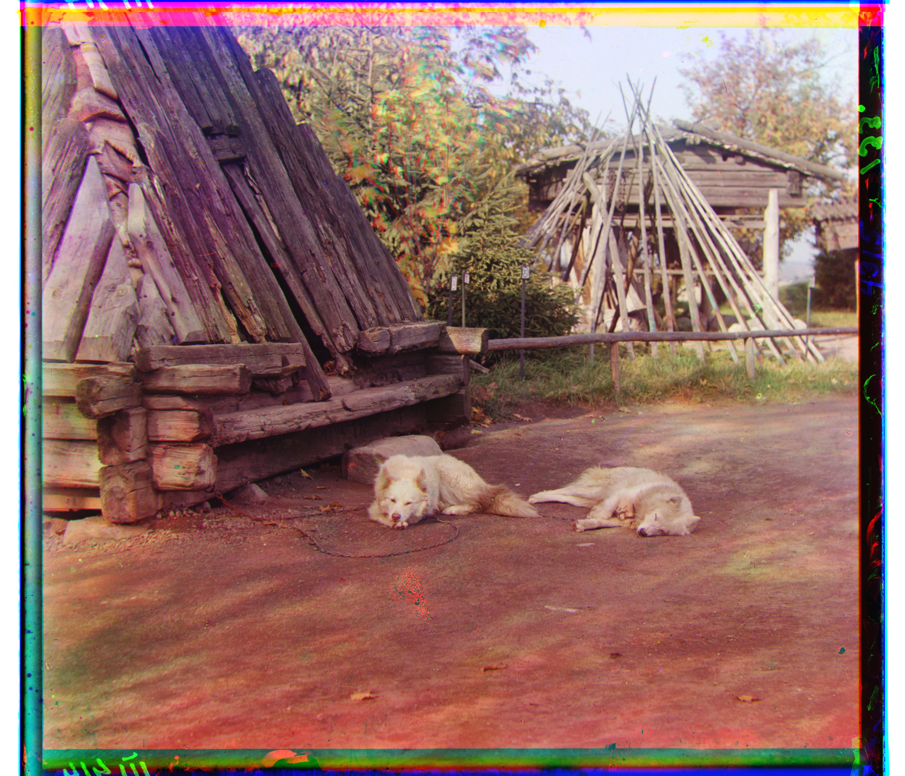
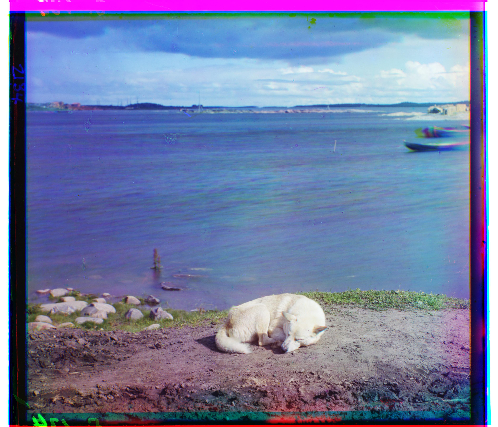
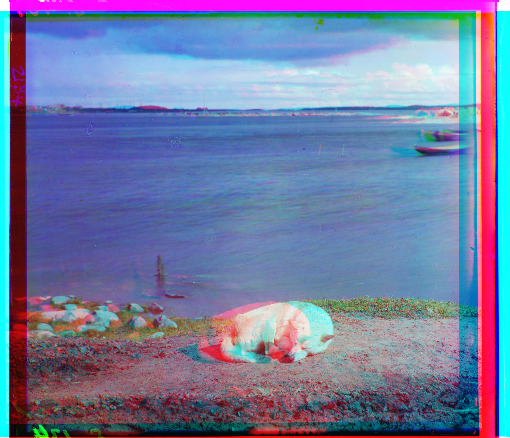
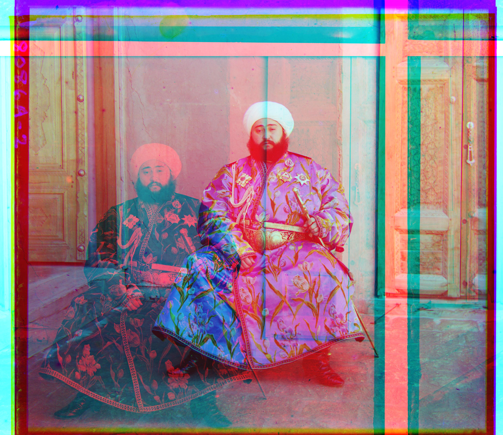
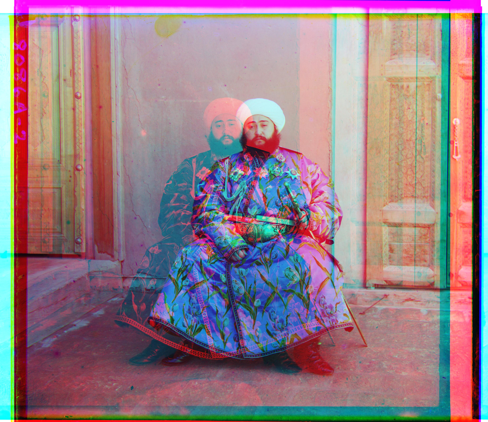

Around 1907, Sergei Prokudin-Gorskii photographed the Russian Empire in color, decades before color film existed. His trick: take three exposures of the same scene in quick succession, each through a different colored filter (blue, green, red), and record all three as grayscale strips on a single glass plate. Stack the three strips back together and you get a color photo.
This is what that actually looks like before any processing: one tall image, split into three roughly equal bands from top to bottom. In this project, the top band is treated as blue, the middle as green, and the bottom as red (matching the filter order the plates were shot in).
The catch is that the camera or the scene could shift slightly between exposures, so the three bands rarely line up when stacked directly, producing colored ghosting instead of a sharp image. This project's job is to automatically find, for each photo, how far to shift the green and red bands so they land back on top of the blue one.
The approach: try a window of candidate (dy, dx) shifts, score how well each one lines the shifted channel up against the reference (blue) channel, and keep the best-scoring shift. Two scoring functions were used, L2 (Euclidean) distance and Normalized Cross-Correlation (NCC):
L2 distance: \( \sqrt{\sum (I_1 - I_2)^2} \)
NCC: \( \dfrac{(I_1 - \bar{I_1}) \cdot (I_2 - \bar{I_2})}{\|I_1 - \bar{I_1}\| \, \|I_2 - \bar{I_2}\|} \)
L2 is a distance between pixel values, zero when the two channels match exactly, so a lower L2 means a better alignment. NCC is a similarity score bounded by 1 (perfect positive correlation), so a higher NCC means a better alignment.
Each candidate shift is applied with a circular roll (np.roll): pixels shifted off one edge
wrap around to the opposite edge rather than being padded with zeros. This is why scoring is restricted
to a cropped interior region (see Part 1 below): without cropping, wrapped-around pixels from the far
edge of the image would count toward the match score and pull the search toward a wrong shift.
On the small .jpg scans (cathedral, monastery, tobolsk), exhaustive search over a [-15, 15] pixel window is cheap enough to run directly, no extra tricks needed.
Scoring directly on the raw channel splits, cathedral.jpg looked reasonably aligned, but monastery.jpg showed clear ghosting around the domes and bridge railings. Both L2 and NCC converged on the same offset for monastery, which suggested the problem was not metric choice but something pulling both metrics toward the same bad match, likely the high-contrast glass plate border rather than the actual scene content.


| Image | Metric | Green offset (dy, dx) | Red offset (dy, dx) |
|---|---|---|---|
| cathedral.jpg | L2 / NCC | (1, -1) | (7, -1) |
| monastery.jpg | L2 / NCC | (-6, 0) | (9, 1) |
| tobolsk.jpg | L2 / NCC | (3, 2) | (6, 3) |
Cropping a margin off each channel before scoring (while still shifting and outputting the full image) fixed the monastery misalignment entirely, with no more visible ghosting. It also changed the offsets for cathedral.jpg, even though that result already looked fine by eye, which suggests the border was quietly biasing the "good" result too, not just causing the visible failure on monastery.


| Image | Metric | Green offset (dy, dx) | Red offset (dy, dx) |
|---|---|---|---|
| cathedral.jpg | L2 / NCC | (5, 2) | (12, 3) |
| monastery.jpg | L2 / NCC | (-3, 2) | (3, 2) |
| tobolsk.jpg | L2 / NCC | (3, 3) | (6, 3) |
The full-size .tif scans are far too large for exhaustive search at [-15, 15]: a real misalignment on these images can be on the order of 50 to 150 pixels, and searching that wide a window at full resolution would be extremely slow. Instead, a coarse-to-fine image pyramid is used:
This keeps exhaustive search confined to the coarsest, cheapest level, while every finer level only needs a tiny local search, since the previous level's estimate should already be close. The 100px cutoff keeps the coarsest exhaustive search small (under a few thousand pixel comparisons even at a ±15 window), and a ±2px refine window is enough at every finer level since each level starts from an estimate that should already be within a pixel or two of correct.
On the .tif images, L2 and NCC no longer always agree, and NCC is used as the primary metric going forward. L2 compares raw pixel intensities directly, so it implicitly assumes the three channels have similar brightness and contrast. NCC first subtracts the mean and normalizes by norm, so it is invariant to per-channel brightness and contrast differences. Since the R, G, and B exposures on these glass plates were taken through different filters, and often have visibly different brightness, NCC is the more appropriate metric for the full-size images.
church.tif shows this directly: L2 diverged to a clearly wrong displacement, while NCC produced a much better alignment on the same image and pyramid code.


| Image | Metric | Green offset (dy, dx) | Red offset (dy, dx) |
|---|---|---|---|
| church.tif | L2 | (49, 435) | (77, 427) |
| church.tif | NCC | (25, 4) | (58, -4) |
Pyramid alignment (NCC) results for all 17 images: the 14 provided plus 3 selected from the Library of Congress collection (marked "self-selected" below). emir.tif is shown here using its final edge-based alignment. See the failure case and Bells & Whistles sections below for why.











| Image | Green offset (dy, dx) | Red offset (dy, dx) |
|---|---|---|
| cathedral.jpg | (5, 2) | (12, 3) |
| monastery.jpg | (-3, 2) | (3, 2) |
| tobolsk.jpg | (3, 3) | (6, 3) |
| church.tif | (25, 4) | (58, -4) |
| emir.tif (edge-based) | (49, 24) | (107, 40) |
| harvesters.tif | (60, 17) | (124, 13) |
| icon.tif | (41, 17) | (89, 23) |
| ilemselga.tif | (40, 7) | (130, 11) |
| melons.tif | (82, 11) | (178, 13) |
| religious_painting.tif | (28, 3) | (68, 7) |
| self_portrait.tif | (79, 29) | (176, 37) |
| siren.tif | (49, -6) | (96, -25) |
| three_generations.tif | (53, 14) | (112, 11) |
| wharf.tif | (15, -7) | (83, -16) |
| master-pnp-prok-00000-00010a (self-selected) | (46, -3) | (98, -20) |
| master-pnp-prok-00500-00588a (self-selected) | (50, 1) | (110, 0) |
| master-pnp-prok-00300-00335a (self-selected) | (13, -1) | (81, -2) |
The sleeping dog image (master-pnp-prok-00300-00335a) reproduces the same L2-fails / NCC-recovers pattern seen earlier with church.tif: L2 diverged to (84, -175) for the red channel, producing visible red/cyan ghosting on the dog and the boat in the background, while NCC found (81, -2) and aligned cleanly. This is a second, independent case supporting NCC as the better default metric for these full-size scans, not something specific to church.tif.

emir.tif (the Emir of Bukhara) fails to align under both L2 and NCC, producing visible double-exposure ghosting. Unlike church.tif, this is not fixed by switching metrics, since the R, G, and B exposures of this particular plate do not just differ in overall brightness, they differ enough that raw pixel content does not correspond well between channels at all. This matches the assignment's own note that this image is a known hard case requiring a cleverer metric or a feature-based approach rather than raw pixel comparison, But emir.tif could be aligned cleanly by scoring on Sobel edge maps instead of raw pixel values, see below Bells & Whistles.


Since emir.tif's R, G, and B channels differ enough in brightness that raw pixel comparison fails even under NCC, the alignment search is instead scored on Sobel edge magnitude maps of each channel rather than on raw pixel values. Edges (garment outlines, door frames, figure silhouettes) tend to line up across channels even when overall brightness and contrast do not. The edge maps are used only to find the best displacement. That displacement is then applied to the original channel so the final output still has real color values, not edge magnitudes.
This fixed the double-exposure ghosting entirely. The offsets also became far more plausible: the red channel offset went from (414, -787), clearly divergent, to (107, 40), which is in the same range as the green channel offset of (49, 24).
| Image | Metric | Green offset (dy, dx) | Red offset (dy, dx) |
|---|---|---|---|
| emir.tif | NCC (raw pixels) | (49, 24) | (414, -787) |
| emir.tif | NCC (Sobel edges) | (49, 24) | (107, 40) |